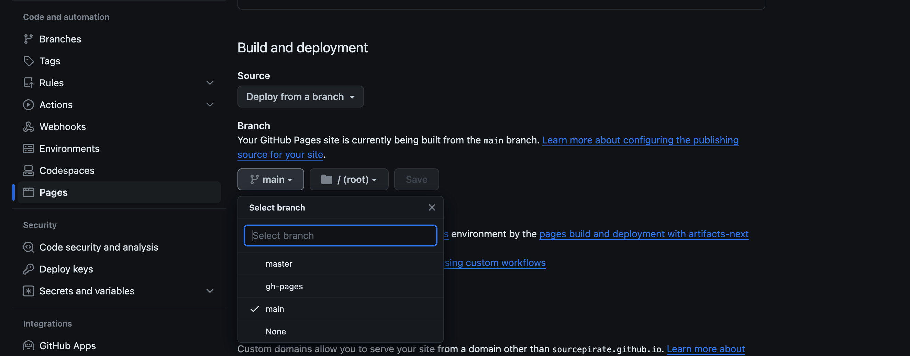

Setting up Pelican to publish a blog to GitHub Pages involves a few steps. GitHub Pages allows you to host your static site directly from a GitHub repository. Here's a step-by-step guide on how to set up Pelican and publish your blog to GitHub Pages.
Install Pelican
Make sure you have Python >= 3.8 installed, and then install Pelican using pip.
pip install pelican
Create a Pelican Project
Create a new directory for your Pelican project and navigate into it.
mkdir my_pelican_blog
cd my_pelican_blog
Initialize a Pelican project:
pelican-quickstart
Follow the prompts to configure your Pelican project. At a minimum, you'll need to set the source and output paths. Choose the appropriate options based on your preferences.
$ pelican-quickstart
Welcome to pelican-quickstart v4.9.1.
This script will help you create a new Pelican-based website.
Please answer the following questions so this script can generate the files
needed by Pelican.
> Where do you want to create your new web site? [.]
> What will be the title of this web site? my blog
> Who will be the author of this web site? myusername
> What will be the default language of this web site? [en]
> Do you want to specify a URL prefix? e.g., https://example.com (Y/n) n
> Do you want to enable article pagination? (Y/n) Y
> How many articles per page do you want? [10] 5
> What is your time zone? [Europe/Rome] Asia
Please enter a valid time zone:
(check [https://en.wikipedia.org/wiki/List_of_tz_database_time_zones])
> What is your time zone? [Europe/Rome] Asia/Kolkata
> Do you want to generate a tasks.py/Makefile to automate generation and publishing? (Y/n) Y
> Do you want to upload your website using FTP? (y/N) N
> Do you want to upload your website using SSH? (y/N) N
> Do you want to upload your website using Dropbox? (y/N) N
> Do you want to upload your website using S3? (y/N) N
> Do you want to upload your website using Rackspace Cloud Files? (y/N) N
> Do you want to upload your website using GitHub Pages? (y/N) y
> Is this your personal page (username.github.io)? (y/N) myusername.github.io
You must answer 'yes' or 'no'
> Is this your personal page (username.github.io)? (y/N) y
Done. Your new project is available at /Users/myusername/code/myusername.github.io
Create Your Content
Create your blog content in the "content" directory. Pelican uses Markdown and/or reStructuredText for content files.
mkdir content
cd content
touch myblog.md
Configure Pelican for GitHub Pages
Open the pelicanconf.py file in your project directory and make sure to configure the following settings:
SITEURL = 'https://myusername.github.io'
RELATIVE_URLS = True
Replace myusername with your GitHub username with your Github username.
Generate Your Site
Generate your Pelican site using the following command:
$ pelican content
Done: Processed 2 articles, 0 drafts, 0 hidden articles, 0 pages, 0 hidden pages and 0 draft pages in 0.29 seconds.
Create your github repo.
you need to create a github repo in the format myusername.github.io. Replace the myusername with your Github username.
Initialize the github repo.
Add a github remote to your directory.
cd my_pelican_blog
git init
git remote add origin git@github.com:myusername/myusername.github.io
Add more changes.
Create a .gitignore file to ignore unnecessary files:
output/
__pycache__/
.cache/
Create custom hook on github
vim .git/hooks/pre-push
#!/bin/sh
while read local_ref local_sha remote_ref remote_sha
do
if [ "$remote_ref" = "refs/heads/master" ]
then
make html
make publish github
fi
done
exit 0
Commit and Push
git add .
git commit -m "Initial commit"
git push origin master
Update settings on repository
Update the pages config in repository.
